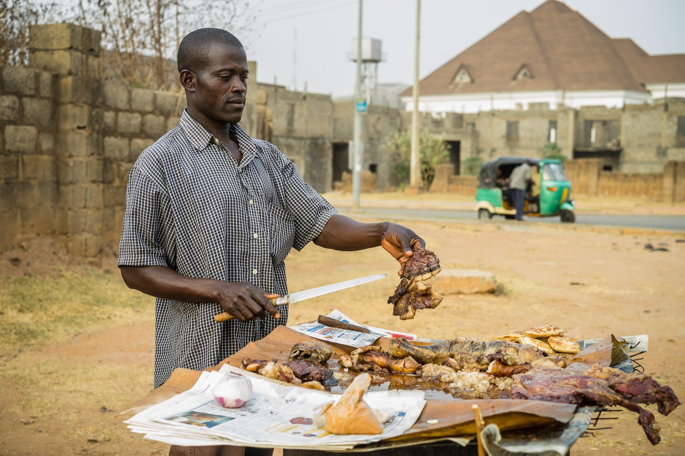
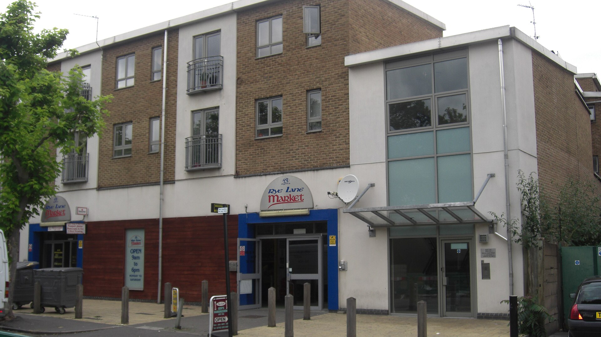
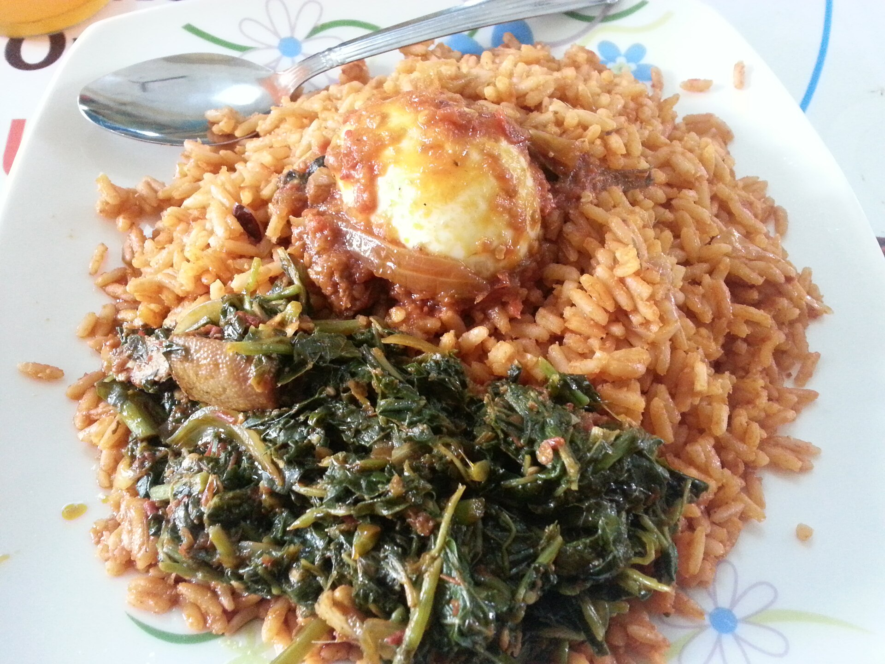
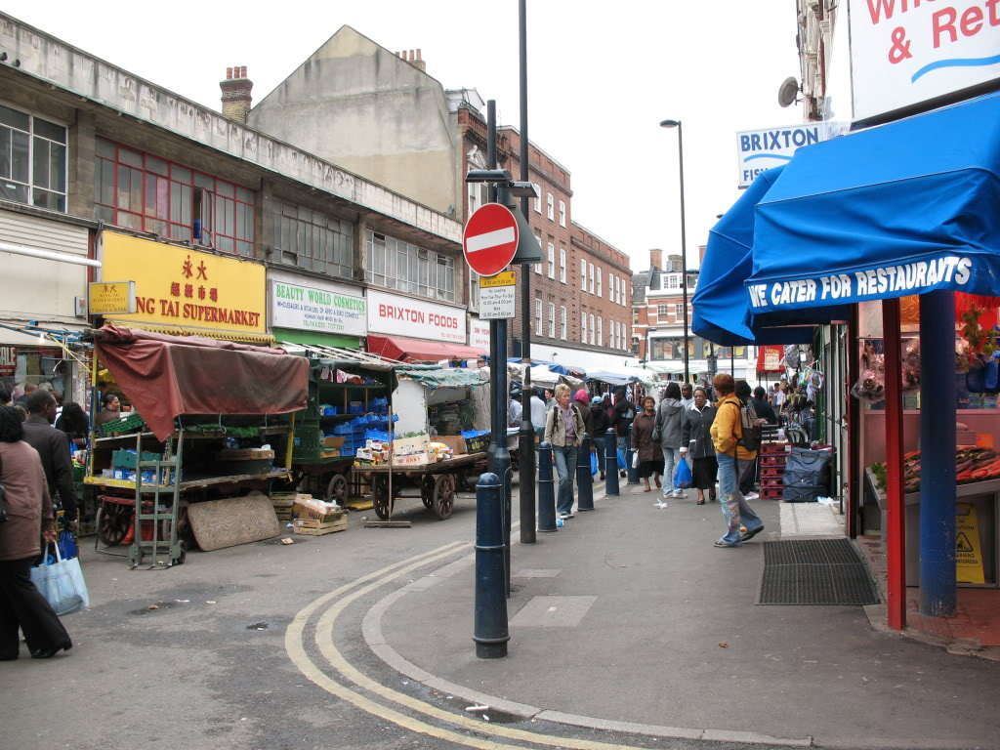
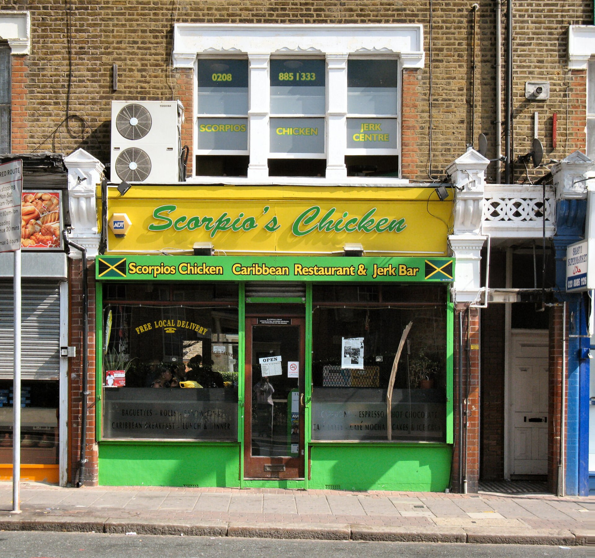
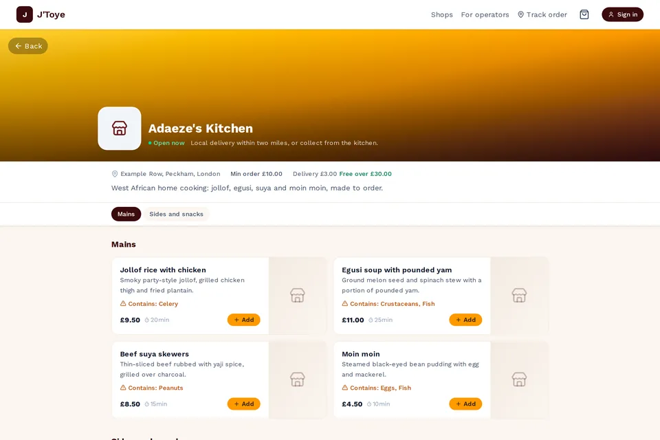
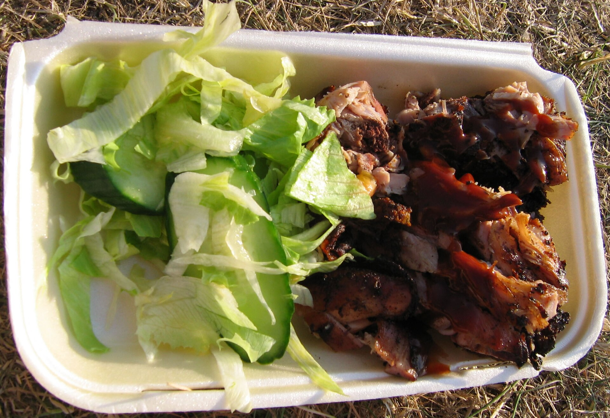
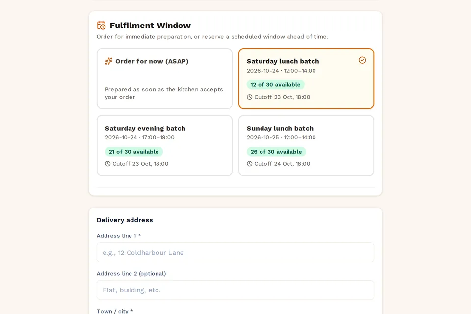
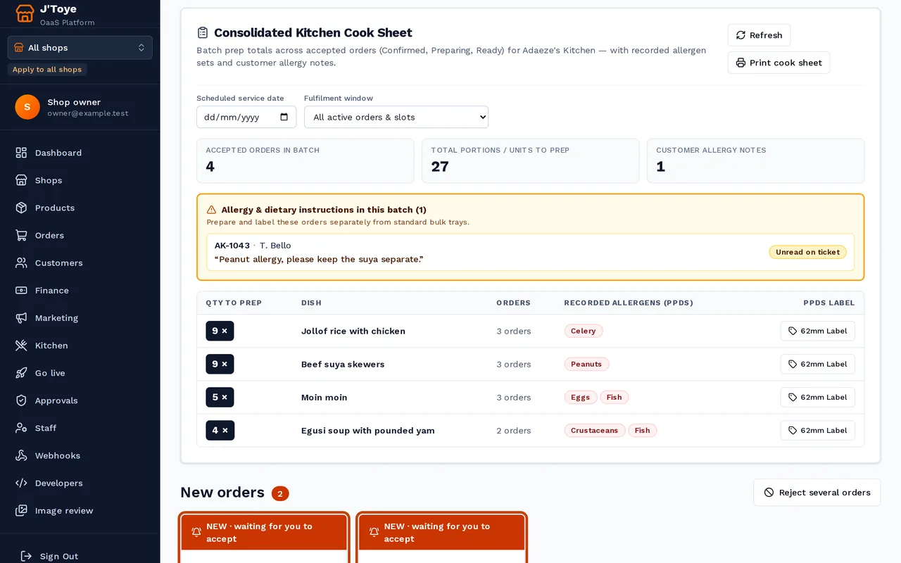
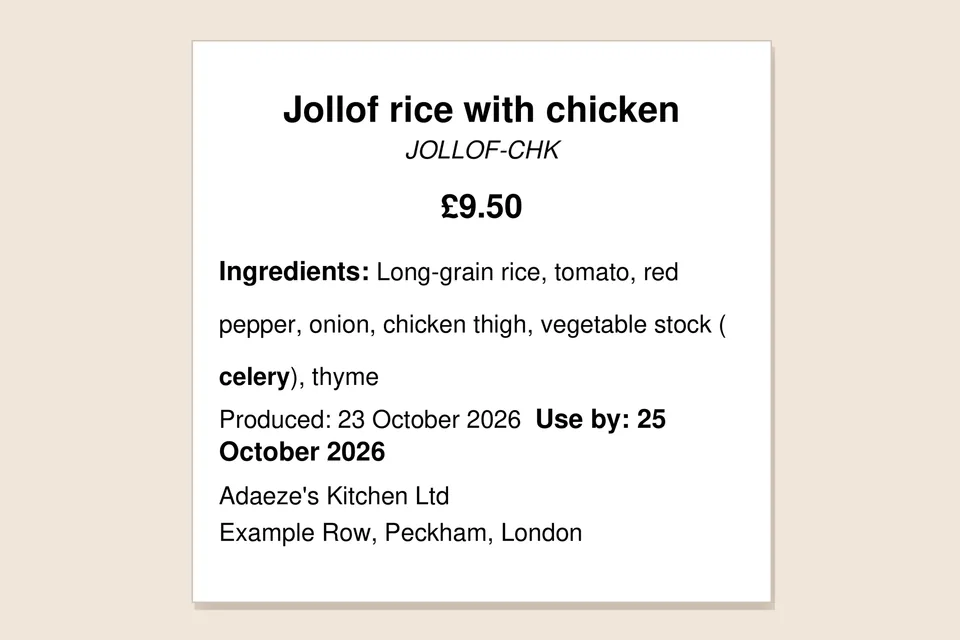

Kitchens on J'Toye
Three steps, no app
-
Find a kitchen
Search by postcode or dish; every kitchen shows its hygiene rating and hours.

-
Order and pay
Delivery or collection; card, or cash on collection where the kitchen allows it; allergens on every item.

-
Follow it
A tracking page from the kitchen to your door; no account needed.

What you can trust
UK food-hygiene rating, verified when the kitchen joins.
Allergen information on every item, with "may contain" where the kitchen says so.
No app to download. A web page, reached by link or QR.
Built around the service you already run



Your menu, your prices, your link and QR.
"Saturday 12:00–14:00, 20 orders", closed at the cutoff.
Every order's lines totalled by dish.
Printed from the product, 14 allergens emphasised.
Run your food business
Take orders, run the kitchen, go live in a day.
See how it works for kitchens